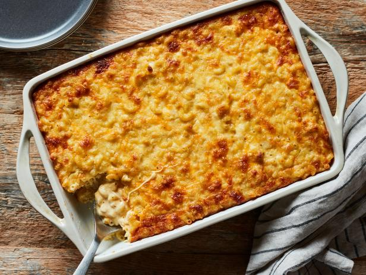

Southern Mac and Cheese

Description
The comfort food you need sometimes. With a southern twist.
Ingredients
- 1 lb macaroni noodles
- 8 oz mozzarella, cubed
- 4 oz gouda, shredded
- 8 oz sharp cheddar, shredded
- 2 oz parmesan, grated
- 3 eggs
- 4 oz yellow cheddar, shredded
- 4 oz white cheddar, shredded
- 12 oz evaporated milk
Instructions